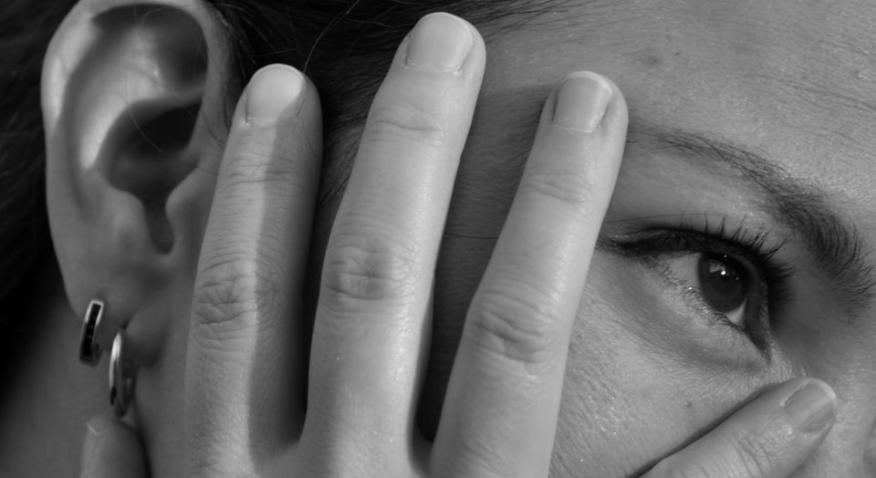

01 eine ahnung von dir
ich weiß nicht, wie man eine seele faltet,
damit sie in einen briefumschlag passt.
aber ich versuche es trotzdem … und schreibe dir.
und mein herz … ist anders.
als schlug es stets mit einem herzschlag im verzug.
dieser eine herzschlag mehr dazwischen …
und eine ahnung von dir.
bleib einen moment still.
nur in der stille.
ich weiß nicht, wie man eine seele faltet,
damit sie in einen briefumschlag passt.
aber ich versuche es trotzdem … und schreibe dir.
wir verschwimmen; verschmelzen zu einem liebevollen gedanken.
sind gemeinsam – bloß ich, noch einsam.

du bist alles dazwischen.
wie eine leere zeile, die mich ansieht.
dann lass ich dich tief in meine augen sehn
und leg deine hand in meine.
ich lächle dich an und du zurück.

komme dir näher,
so nah, dass ich dich fast spüren kann.
dein klang in meinem ohr,
dein herzschlag einmütig mit meinem.
der pfad erst sichtbar mit dem nächsten schritt.
du lernst mir geduld.
was, wenn die stille deine lauteste stimme ist?
und ich dich genau dann am besten hören kann?
du warst 0 sekunden still.
danke, dass du
geblieben bist.